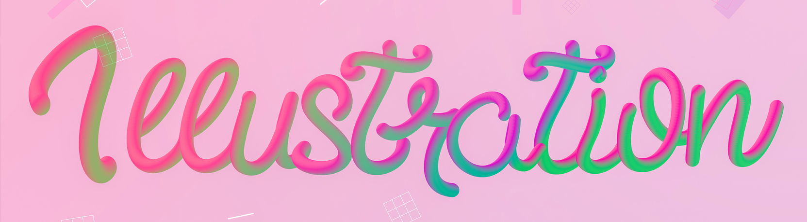
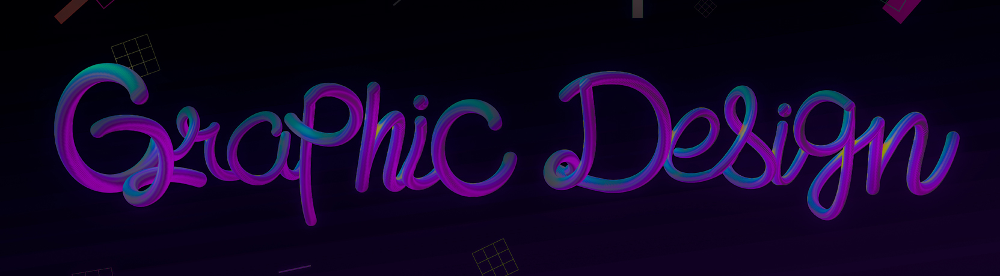
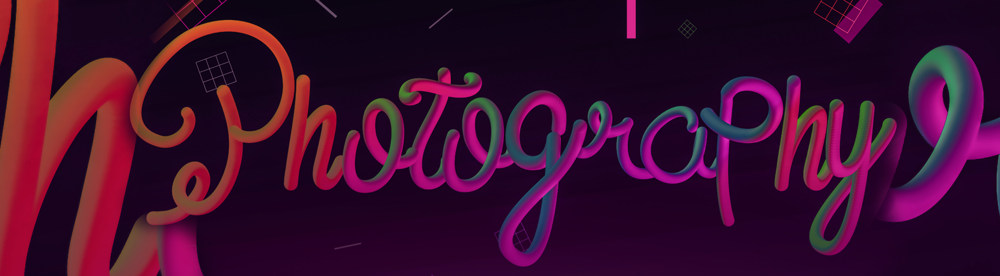

Con el esfuerzo y dedicación he notado la evolución de mis trabajos, esperando que en un futuro cercano alcance mis expectativas y logre mediante ellas, demostrar lo valioso y útil que es el Diseño Gráfico en sus múltiples áreas. Tuve la oportunidad de presentar en colectivo, como individualmente una reseña de mis trabajos en el periodo de 2013-2016; estas vivencias me ayudan a perfeccionar las técnicas manuales como digitales y me motivaron a involucrarme en el mundo de la Ilustración. Asimismo, deseo ganar experiencia, mediante la participación en concursos que se presenten a nivel nacional o internacional y aprender de mis colegas, que comparten con mucha gratitud sus conocimientos.
Últimamente me he dedicado más a la Ilustración, años anteriores ya me había adentrado a esta especialidad, sin embargo desconocía muchas técnicas y métodos para realizarlas; ahora en día puedo decir que el proceso ha sido gratificante, espero mejorar todavía más tanto la ilustración digital como manual. En mis dibujos trato de hacer una variación de colores, cabe mencionar algunos de los ilustradores que han sido mi mayor motivación: Wataboku e Ilya Kuvshinov...Más acerca de Ilustración...
La mayoría de mis trabajos en esta área son universitarios, que han abonado a mí conocimiento y saber que es lo que más se solicita en el ámbito empresarial, mas que todo branding, creación de logos, líneas gráficas, diseño de producto, un sinfin de cosas, en la imagen se puede apreciar una bolsa decorativa que realice de forma manual y posteriormente intervención digital para retocar algunos detalles, la marca que seleccione fué Maruchan... Seguir leyendo...
La fotografía es algo que me llama mucho la atención desde que hace bastante, con el tiempo he logrado perfeccionar algunas técnicas y reforzar la edición o intervención digital necesaria para acoplarla en mis trabajos. Me gusta la idea de incorporar colores vibrantes, haciendo un juego de luces o saturaciones como se puede observar en la imagen; dicha fotografía fue tomada en el presente año, el lugar es la Plaza Futura, allí se pueden apreciar varios modelos arquitectonicos, este efecto se ve excelente es por ello que decidi emplearlo. ...Ver más de Fotografía...